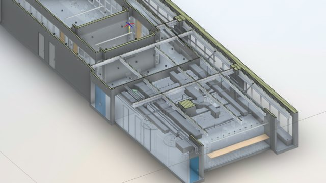
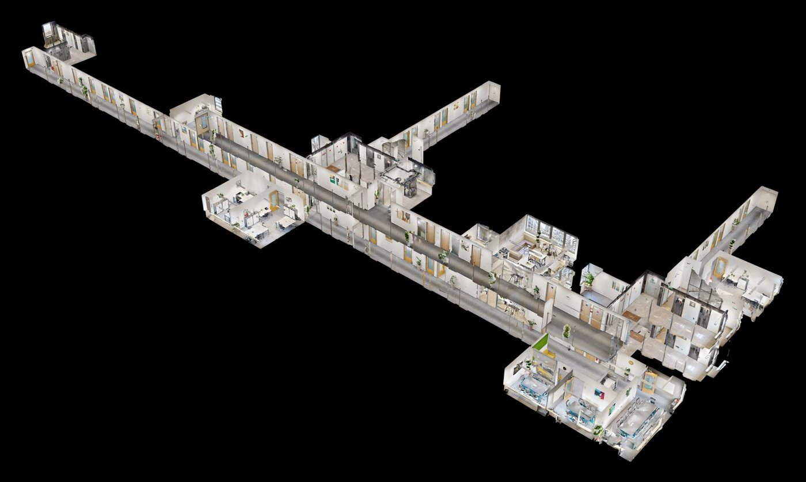
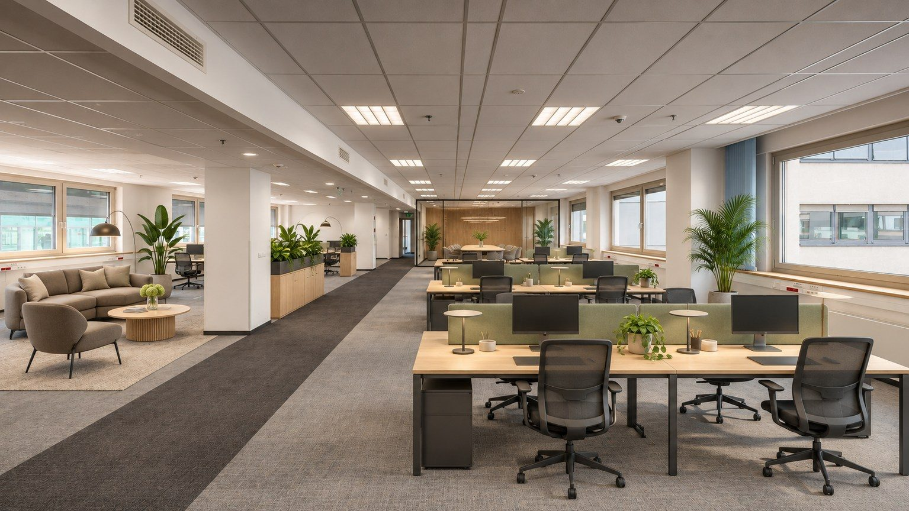
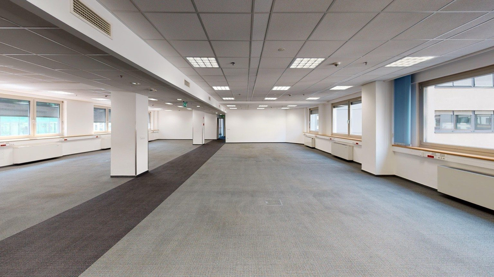
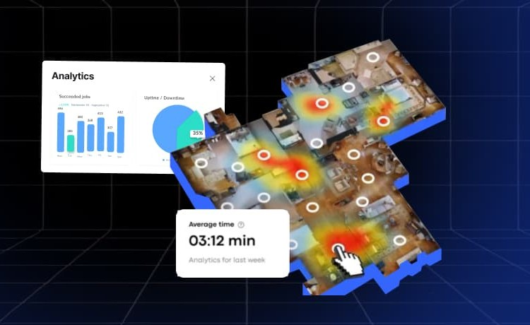

Rövidebb bérbeadási ciklus odautazás nélkül
A döntéshozó, akár külföldi vagy távoli központban, ugyanazt a pontos teret látja, ezért kevesebb a felesleges bejárás, és gyorsabb a döntés. Ugyanez a tér szolgálja a tervezést és az üzemeltetést is.
Stratégiai és operatív kihívások
Portfólió- és bérbeadási szint
- Üres szintek, hosszú bérbeadási ciklus.
- Többszereplős döntés, a bérlői központ gyakran külföldön van.
- Hiányos épületdokumentáció, a tudás néhány kollégánál van.
- Több épület egységes, távoli átláthatósága.
Napi üzemeltetési szint
- Sok helyszíni bejárás alacsony konverzióval.
- Elavult vagy hiányzó alaprajzok, ismételt felmérések.
- Bérlői kialakításnál többszöri helyszíni adatfelvétel.
- Átadás-átvételkor vitatott kiindulási állapot.
- A gépészeti rendszerek és dokumentumok szétszórtan érhetők el.
Egy digitális modell az épület teljes életciklusán
A bérbeadástól az üzemeltetésig ugyanaz a pontos digitális tér szolgálja ki a folyamatot.
Bérbeadás
Az iroda a hirdetésben és az ajánlatban bejárható, a döntéshozó távolról is megismeri.
Bérlői döntés
A kérdések a tér konkrét pontjára vonatkoznak, a méretek a modellből levehetők.
Kialakítás
A tervezés a valós állapotból indul: méretek, nyílászárók, útvonalak, csatlakozási pontok.
Átadás-átvétel
Az átadás előtti és utáni állapot dokumentált, az eredeti állapot nem vitatható.
Üzemeltetés
Alaprajz, dokumentumok és műszaki információk egy helyen, a kollégák és a partnerek számára.
A szolgáltatás tartalma
Bejárható digitális iroda
Valósághű tér, rendezett kezdőnézettel, szintekkel, helyiségekkel és alaprajzzal.
Link, QR-kód és beágyazó kód
Ajánlatba, e-mailbe, hirdetésbe, nyomtatott anyagra és a honlapra.
Mérés a digitális térben
Belmagasság, nyílásméret, távolság és terület a modellben, helyszíni kiszállás nélkül.
Használati betanítás
Egy 1–2 órás alkalom a kollégákkal, a saját feladataikra szabva.
Használati statisztika
Megnyitások száma, időtartam és forgalmi források követhetők.
Tárhely és fenntartás
A tárhelyet, a frissítéseket és a technikai hátteret mi biztosítjuk.
Berendezés eltávolítása a digitális térből
- Üres tér egy kattintássalA bútorok és a berendezési tárgyak eltávolíthatók, a bérlő a tiszta alapterületet látja.
- Saját elrendezés elképzeléseA leendő bérlő a saját munkaállomás- és tárgyalószám-igényéhez tudja mérni a teret.
- Eredeti és módosított nézetA kettő között váltani lehet, a felméréskori állapot mindig elérhető marad.
A módosított nézeteket jelöljük, hogy mindig egyértelmű legyen, mit lát a felhasználó.
Irodaterület
A bérlő döntése a beosztáson és a hangulaton múlik, ezt fotókon nehéz átadni.
Hány munkaállomás fér el, hol vannak a tárgyalók és a kiszolgáló terek?
Az egész terület egy linken, bárhonnan bejárhatóan és mérhetően.
Hol használható a mindennapokban?
Telefonon, tableten és számítógépen, böngészőből, alkalmazás letöltése nélkül.
Nem lassítja az oldalt
A bejárás külső felhőből, kattintásra töltődik be, az oldal betöltését nem terheli.
Egy link, minden ajánlatban
A bérlő és a döntéshozó az ajánlat mellett azonnal körül is nézhet.
Közösen a térben
Megosztott képernyőn együtt járják be a szintet, és ott beszélik meg a részleteket.
Az épület távolról is látható
Több épület állapota és üres területei egy helyről átláthatók.
Betanítás és tájékozódás
Az új munkatárs a munkakezdés előtt megismeri az egész épületet.
Közös kiindulópont
Kivitelező, gépész, takarítás: mindenki ugyanabból a térből dolgozik.
Fejlesztési irányaink
- Információs pontokSzöveg, kép, videó vagy dokumentum a térben: bérleti feltételek, kapacitás, műszaki adatok.
- Többnyelvű bejárásA külföldi bérlőnek és a távoli központnak a saját nyelvén.
- Google Street ViewAz épület és a bejárat a Google Térképen és a Google-profilon is bejárható.
- AlaprajzAz aktuális állapotból készült alaprajz a hirdetéshez és a bérlői egyeztetéshez.
Pontos alap a tervezéshez és az üzemeltetéshez
- Sematikus alaprajzÁttekinthető, méretezhető alaprajz szintenként, a bérbeadáshoz, a bérlői kialakításhoz és a tervezéshez.
- Autodesk- és CAD-környezetA felmért állapotból a tervezőirodák által használt Autodesk- és CAD-programokban tovább dolgozható adatok.
- 3D modell és pontfelhőBIM-hez, tervezéshez, gépészeti egyeztetéshez.
- Egységes kiindulási adatbázisMinden szakági tervező és kivitelező ugyanabból a felmért állapotból dolgozik.
- Átadható állományokAz Önök és a partnerek rendszeréhez.

Mi változott, és mikor?
Két időpontban készült felmérés ugyanabból a nézőpontból, egymás mellett összevethető.
- Bérlői kialakításA terv és a megvalósult állapot, a falak és az álmennyezet mögötti vezetékekkel, mielőtt befedik őket.
- Átadás-átvételA bérbeadás előtti és utáni állapot dokumentálva: vita helyett kép.
- Évek múlva isHol futott a kábel, hol van a csatlakozó, mi volt az eredeti kialakítás.

Látványterv az üres irodából
- Egy nézetből berendezett képAz üres szint egy nézetéből mesterséges intelligenciával látványkép készül: munkaállomások, tárgyaló, pihenősarok.
- Döntés a kialakítás előttA bérlő a saját igényeihez tudja mérni a teret, mielőtt bármi épülne.
- Több változatUgyanabból az üres térből több elrendezési variáció is készülhet, így a bérlő összevetheti a lehetőségeket.


Eredeti térLátványtervHúzza a választóvonalat, telefonon ujjal is mozgatható.
Mérhető és élő, amikor szükség van rá
A bejárás az alap. Erre épülhet minden, ami az adott épületnek többet hoz.
- Látogatottsági hőtérképLátszik, mely szintek, tárgyalók és térrészek érdeklik leginkább az érdeklődőket, így tudható, mit érdemes kiemelni az ajánlatban.
- StatisztikaMegnyitások száma, átlagos időtartam és forgalmi források.
- Videó és 3D tárgy a térbenPéldául a recepciónál az épület bemutatkozó videója, a liftek mellett a használati tudnivalók.
- Útvonal- és biztonsági információkMenekülési útvonalak, gyűjtőpontok és belépési szabályok pontosan ott, ahol szükség van rájuk.

Hogyan dolgozunk?
Partnerként, az első egyeztetéstől a napi használatig.
Egyeztetés
Megértjük az épületet és a valódi felhasználási célt. Ebből készül az ajánlat.
Felmérés
Egyeztetett időpontban, akár használat közben is. Az időtartam a terület méretétől függ.
Feldolgozás
Rendezett kezdőnézet, szintek és helyiségek, a megrendelt tartalmakkal.
Közös bevezetés
Egy 1–2 órás alkalom a kollégákkal, a saját feladataikra szabva.
Gondozás
Tartalomfrissítés, bővítés és statisztika, amikor szükség van rá.
Gyakori kérdések
Zavarja a bérlőket a felmérés?
Egyeztetett időpontban dolgozunk, akár használat közben is. A legjobb eredményhez azt javasoljuk, hogy a felmérés idején ne legyenek emberek a felmért térben.
Mennyi idő alatt készül el?
A terület méretétől és a kért tartalmaktól függ. A pontos ütemezést az ajánlat rögzíti.
Mi kerül bele, és mi marad ki?
Előre egyeztetjük. A bérlők által használt, érzékeny vagy nem nyilvános helyiségek kimaradhatnak, egyes részek pedig elhomályosíthatók.
Ki láthatja a bejárást?
Ön dönt: nyilvános link, jelszóval védett vagy csak meghívott felhasználóknak elérhető hozzáférés is beállítható.
Mi van átépítésnél vagy bérlőváltásnál?
Az információs pontok bármikor frissíthetők. Ha a tér egy része megváltozik, csak azt a részt szkenneljük újra. Új területek esetén a felmérés folytatható, nem kell elölről kezdeni.
Lassítja a honlapot?
Nem. A bejárás külső felhőből, kattintásra töltődik be, az oldal betöltését nem terheli.
Következő lépés: 30 perces online bemutató
Fél óra alatt megmutatjuk, hogyan működne az Önök épületében, és válaszolunk a kérdéseikre.